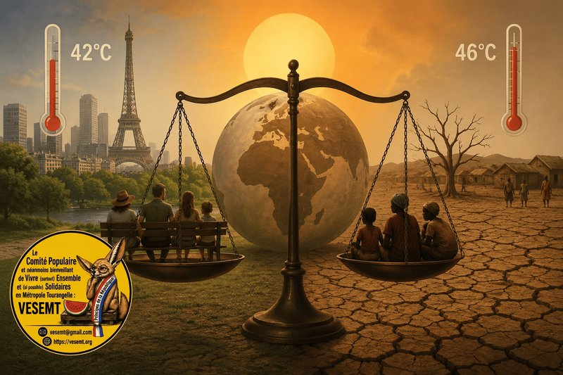

« Ou comment le thermomètre révèle parfois davantage nos imaginaires que la température. »

« Le soleil n’a pas changé. Notre empathie, si. »
Pendant des décennies, lorsque des vagues de chaleur frappaient l’Afrique, le Maghreb, le Moyen-Orient ou l’Asie du Sud, la réaction tenait souvent en une phrase :
« Là-bas, c’est normal, il fait chaud. »
Autrement dit :
« Vous vivez dans un four, de quoi vous plaignez-vous ? »
Puis les canicules se sont installées en Europe.
Et soudain, la chaleur est devenue un enjeu de civilisation.
Étonnant.
« Le thermomètre est le même. Pas toujours la compassion. »
À 46 °C au Pakistan, on parlait d’un « épisode climatique ». À 42 °C à Paris, on découvre « une crise sans précédent ».
Pourtant, le mercure ne connaît ni les frontières ni les passeports. Ce qui varie parfois, c’est notre manière de raconter les catastrophes.
Depuis plus de vingt ans, les chercheurs en sciences de l’information montrent que les catastrophes frappant les pays du Sud sont plus souvent présentées comme des fatalités, tandis que celles qui touchent les pays riches sont davantage traitées comme des urgences mondiales (Susan D. Moeller, Compassion Fatigue, 1999 ; Lilie Chouliaraki, The Spectatorship of Suffering, 2006).
« Le climat ne fait pas de préférence. Les récits, parfois. »
- Le GIEC rappelle dans son 6ᵉ rapport d’évaluation (AR6, 2023) que les populations ayant historiquement le moins contribué aux émissions de gaz à effet de serre sont souvent celles qui en subissent déjà les conséquences les plus graves.
- Le PNUE (UNEP) parle d’« injustice climatique ».
- Le Lancet Countdown décrit un accroissement des inégalités sanitaires liées au climat.
Autrement dit :
- Ce n’est pas un slogan militant.
- C’est un constat scientifique.
« Ce n’est pas forcément du racisme. Mais ce n’est certainement pas neutre. »
Soyons précis.
- Dire que chaque journaliste, chaque citoyen ou chaque responsable politique est raciste serait aussi caricatural qu’inexact.
- En revanche, les travaux d’Edward Said, d’Achille Mbembe ou de Françoise Vergès montrent que nos représentations du monde restent traversées par des héritages coloniaux.
- Ils influencent, souvent inconsciemment, la manière dont certaines vies paraissent immédiatement universelles… tandis que d’autres deviennent presque un décor permanent de l’actualité.
Autrement dit :
- Il n’est pas nécessaire qu’il y ait une intention raciste pour que des mécanismes produisent des effets discriminatoires.
- C’est précisément ce que les sciences sociales appellent un biais structurel ou un imaginaire postcolonial.
« Décoloniser le regard avant de climatiser les consciences. »
Les combats antiracistes et décoloniaux ne consistent pas seulement à dénoncer des insultes ou des discriminations explicites. Ils invitent aussi à interroger une question plus dérangeante :
- Pourquoi certaines souffrances deviennent-elles immédiatement des drames universels… alors que d’autres restent des statistiques exotiques ?
- Les valeurs portées par de nombreuses organisations (dont nous) : égalité réelle, dignité humaine, refus des hiérarchies héritées de l’histoire coloniale , trouvent ici une résonance particulière.
« Et l’actualité climatique doit être l’occasion de le appeler en vu de l’imposer, car si l’universalisme ne commence qu’au moment où les pays riches sont touchés, alors ce n’est plus de l’universalisme. C’est un privilège géographique. »
« Le soleil est un juge d’instruction. »
Il convoque tout le monde.
- Il ne demande ni la couleur de peau.
- Ni le PIB.
- Ni le passeport.
Pendant cinquante ans, beaucoup ont cru que la chaleur était « un problème de pays chauds ».
Nous découvrons aujourd’hui qu’elle était surtout un problème que nous regardions de loin.
Le climat n’a pas changé de cible. C’est notre proximité avec la cible qui a changé.
Et peut-être qu’au fond, la plus grande leçon de cette canicule n’est pas météorologique.
- Elle est politique.
- Elle nous rappelle que l’empathie n’est véritablement universelle que lorsqu’elle n’attend pas que la catastrophe franchisse nos frontières.
« Le soleil ne doit rien à personne. Pourtant, la France, elle, a une dette. »
Car si le thermomètre est impartial, l’histoire, elle, ne l’est pas. Les pays du Sud ne subissent pas la chaleur parce qu’ils sont « nés sous un mauvais ciel ». Ils la subissent parce que nos modèles de développement : industriels, coloniaux, extractivistes : ont brûlé leur part de carbone avant même qu’ils aient eu le droit de rêver d’une usine ou d’une voiture.
La dette écologique, ce n’est pas une métaphore.
C’est le coût cumulé de nos excès. C’est le pétrole pompé en Algérie pour faire rouler nos moteurs. C’est l’uranium extrait au Niger pour allumer nos lumières. C’est le coton, le cacao, le coltan arrachés à des terres qu’on a rendues plus sèches, plus pauvres, plus vulnérables — pendant qu’on leur expliquait que « la chaleur, c’est normal ».
Le GIEC est clair : l’Europe a émis près de 30 % des gaz à effet de serre historiques …. pour 7 % de la population mondiale. L’Afrique subsaharienne, elle, pèse moins de 4 % des émissions… et subit les conséquences les plus lourdes.
Ce n’est pas une question de générosité. C’est une question de justice arithmétique.
Dès lors, reconnaître cette dette, ce n’est pas une posture morale. C’est un acte politique qui change tout :
- Ce n’est plus « aider les pauvres » (approche environnementale, assistancielle).
- C’est rembourser ce qu’on leur doit (approche écologique, réparatrice).
Cela signifie :
- Financer les pertes et dommages (le fameux fonds « Loss and Damage » voté à la COP 28) sans conditionnalités.
- Transférer les technologies propres gratuitement, pas comme des brevets à vendre.
- Réduire nos émissions ici, radicalement, au lieu de compenser à coup de « crédits carbone » qui ressemblent à des indulgences modernes.
- Cesser d’extraire leurs ressources pour notre transition (lithium, cobalt) en reproduisant les logiques d’hier.
Alors, oui, la canicule à Paris a réveillé les consciences. Mais si cette prise de conscience ne s’accompagne pas d’un transfert de pouvoir et de ressources, elle n’est qu’un miroir aux alouettes.
L’empathie ne se décrète pas. Elle se prouve.
Et la preuve, pour la France, serait d’assumer enfin qu’elle n’est pas « en avance » sur l’écologie. Elle est en retard sur sa propre histoire.
Le soleil, lui, continuera de briller sur tous.
Mais l’ombre de ce qu’on a pris aux autres, elle, ne disparaîtra que quand on aura décidé de la rendre.
« On a brûlé leur avenir pour construire notre confort. Aujourd’hui, ils brûlent. Demain, nous aussi. La seule question qui vaille : voulons-nous être les derniers à brûler, ou les premiers à partager l’ombre ? »
Abd-El-Kader AIT-MOHAMED
- Locataire HLM de la Tour de la Galboisière et « Fier de l’être ».
- Membre du Comité populaire et néanmoins bienveillant de Vivre (surtout) Ensemble et (si possible) Solidaires en Métropole Tourangelle (VESEMT)
- Président de l’Association VESEMT
Sources
- GIEC (IPCC), Climate Change 2023 – Synthesis Report (AR6).
- Programme des Nations unies pour l’environnement (PNUE/UNEP), Adaptation Gap Report 2024.
- The Lancet Countdown on Health and Climate Change 2024.
- Susan D. Moeller, Compassion Fatigue: How the Media Sell Disease, Famine, War and Death, Routledge, 1999.
- Lilie Chouliaraki, The Spectatorship of Suffering.
- Edward Said, L’Orientalisme.
- Achille Mbembe, Critique de la raison nègre.
- Françoise Vergès, Un féminisme décolonial.
Commentaires